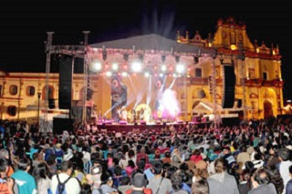
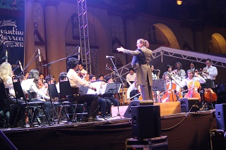
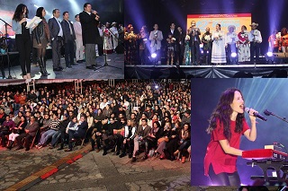
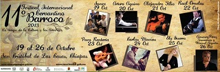
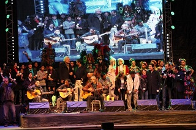

El pueblo mágico de san Cristóbal de las casas es la cede de una verdadera fiesta de difusión artística y cultural. El festival cervantino barroco antes conocido como el festival de las culturas y las artes no es similar al cervantino de Guanajuato, con la participación de 135 artistas chiapanecos, 138 de otras partes de México y 42 internacionales, el festival cervantino barroco es un evento que incluye además de excelentes conciertos de música tradicional y barroca, obras de teatro infantil, exposiciones, conferencias, muestras de danza, recitales de poesía y mucho más. El festival cervantino barroco de san Cristóbal de las casas se lleva cavo del día 26 al 31 de octubre en la plaza de la paz, la plaza 31 de marzo y el parque de los arcos.
Se ubica en el centro de la ciudad y ocupa las 3 plazas principales de la ciudad, plaza 31 de marzo, plaza de la paz y plaza de los arcos.
Si usted se encuentra ubicado el arco del carmen puede caminar 3 cuadras sobre el andador para llegar directamente al parque central.
En esté lugar usted practicar u observar:
*Eventos Culturales
*Festivales de Cine
*Festivales de Música
*Festivales de Rock
*Festivales de Folklóricos





posicione el mouse sobre las imágenes